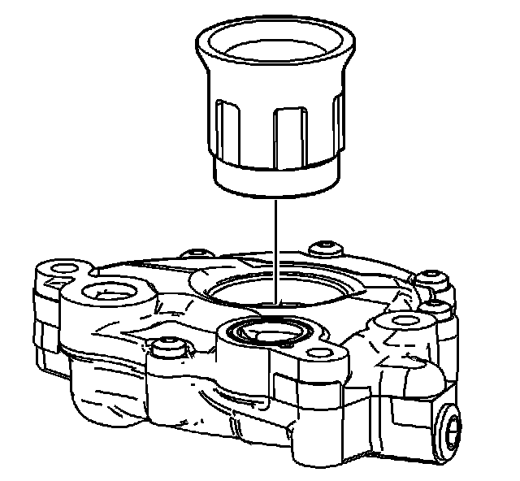
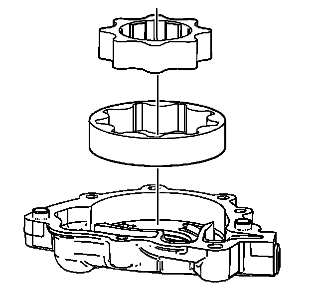
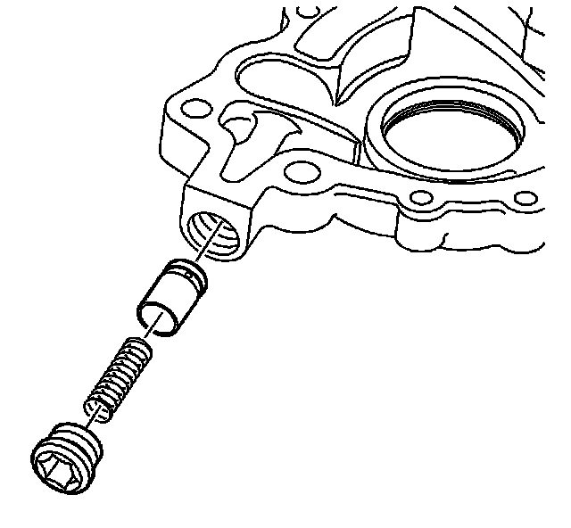

69. Oil Pump Disassemble
Oil Pump Disassemble

1. Remove the oil pump drive spacer.

2. Remove the oil pump body bolts.
3. Remove the oil pump body cover.

4. Remove the oil pump drive and driven gears.

5. Remove the oil pump relief valve plug, relief valve spring and relief valve plunger.

6. Remove the oil pump body to oil pump cover alignment dowels.